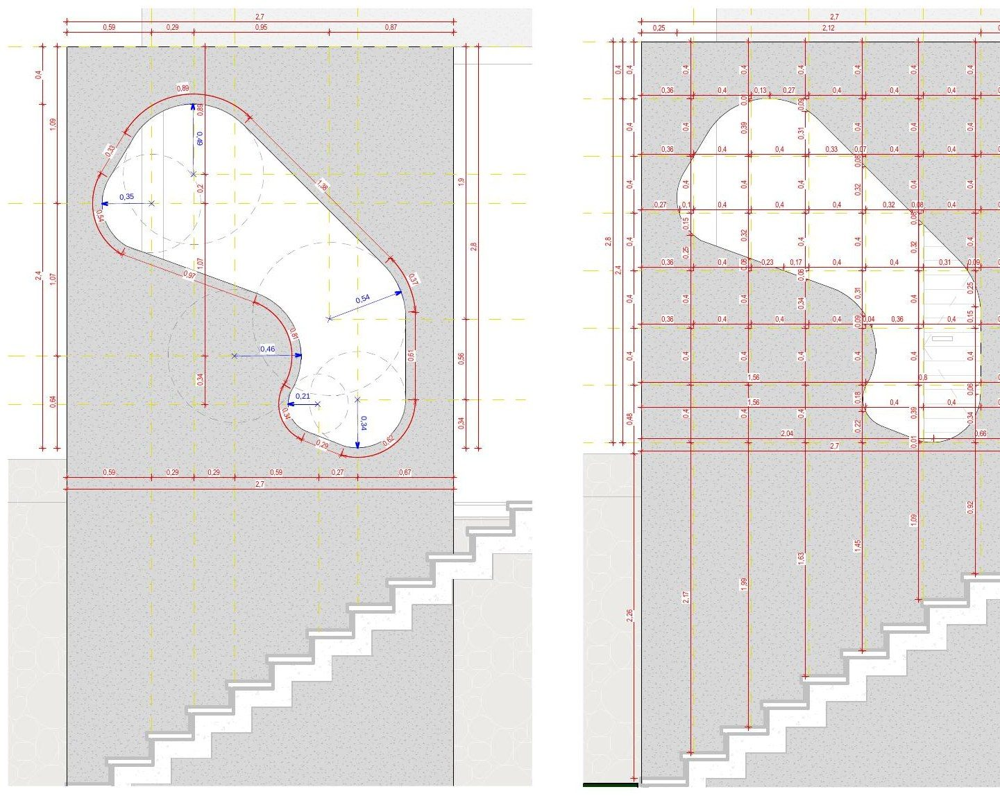

02
Casa Noor

Casa Noor is a residential project developed at the “Marcos Lula Arquiteto” office for a couple and an elderly woman, mother of one of them, in the countryside of Goiás. The first formal studies begin as hand sketches finished in watercolor, serving both as an early glimpse of the project's form at the first presentation and as an open-house gift to the clients at final delivery. The project was delivered and completed.
“The word Noor (or Nur) comes from Arabic and means light, glow or clarity. Its meaning, however, goes far beyond physical light, carrying strong spiritual symbolism.”


Process
From sketch to construction set.
